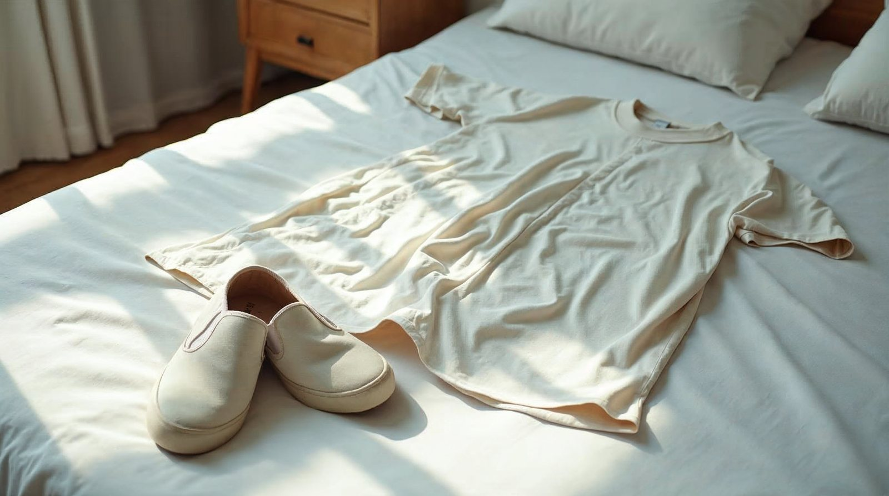
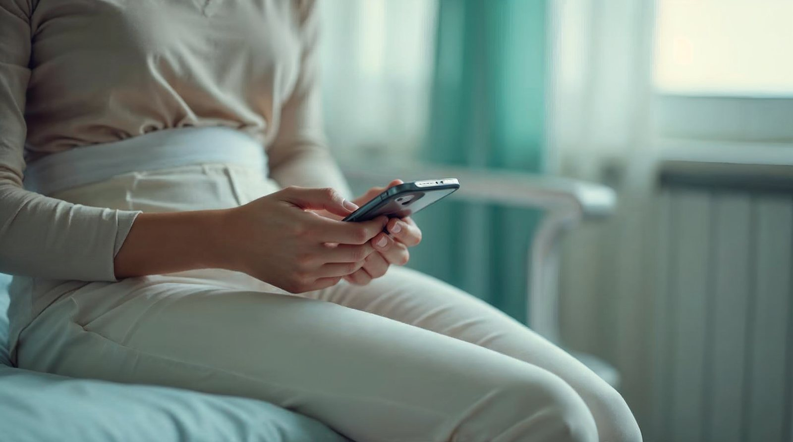
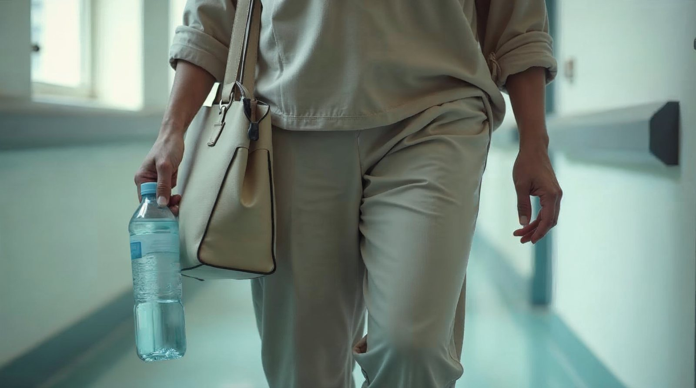
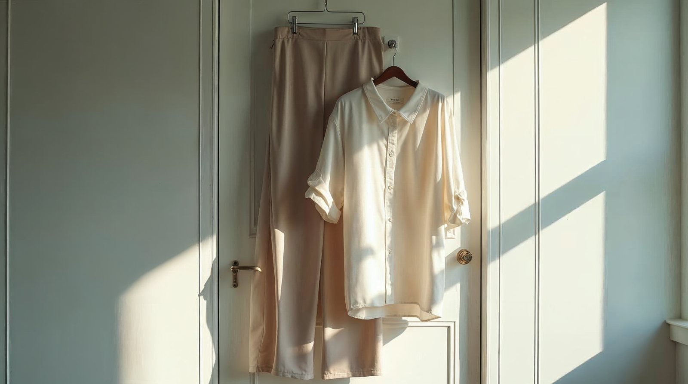
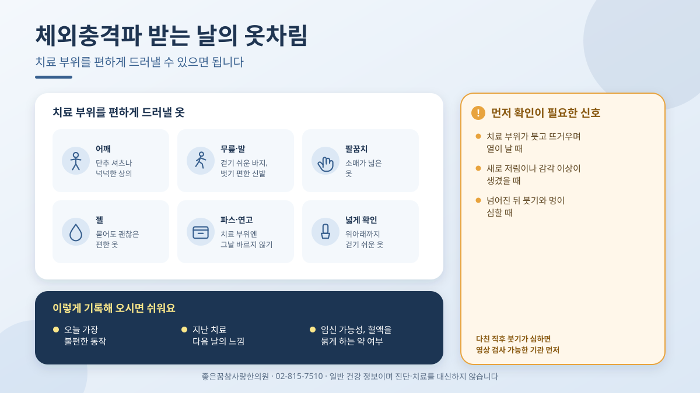

이종호 한의사 감수좋은꿈참사랑한의원 대표원장 (한의사 면허번호 19769)발행 2026-11-25 · 수정 2026-11-25
이 글의 차례
아침 일곱 시 반, 옷장 앞에서 잠깐 멈춰 섭니다. 오늘 퇴근길에 체외충격파 예약이 있습니다. 회사에는 셔츠를 입고 가야 하는데, 어깨를 보여 드려야 한다면 단추를 몇 개나 풀어야 할까요. 젤이 묻으면 그대로 집에 가야 하나, 하는 생각도 듭니다. 고민하다 결국 평소처럼 목이 둥근 니트를 입고 나섭니다.
그리고 저녁에 진료실에서 목둘레를 당기고 소매를 걷어 올리느라 한참을 씨름하십니다.
진료실에서 이런 말씀을 자주 듣습니다. "이 옷 입고 와도 되는 건지 몰라서요." 미리 전화로 여쭤보시는 분도 있고, 갈아입을 옷을 가방 가득 챙겨 오시는 분도 있습니다. 몇 주째 같은 자리가 아파 겨우 시간을 내셨을 텐데 옷차림까지 신경 쓰셨다니, 그 마음이 짐작됩니다. 아픈 몸으로 하루를 버티는 것만으로도 충분히 애쓰고 계신 겁니다.
답은 생각보다 간단합니다. 체외충격파는 아픈 자리와 그 둘레를 넓게 눌러 보며 지점을 찾고, 피부에 젤을 바른 뒤 진행합니다. 그래서 치료할 부위를 위아래로 한 뼘쯤 더 편하게 드러낼 수 있는 옷이면 준비는 끝납니다. 어깨라면 앞이 열리는 단추 셔츠나 넉넉한 상의, 무릎과 발이라면 걷어 올리기 쉬운 바지와 벗기 편한 신발이면 충분합니다.

왜 옷차림이 진료의 흐름을 바꿀까요
옷 이야기가 사소해 보여도 진료실에서는 꽤 큰 차이를 만듭니다. 가장 먼저 하는 일이 아픈 자리를 찾는 것이기 때문입니다. 환자분이 가리키신 한 점만 보는 게 아니라, 그 둘레를 손으로 넓게 눌러 보며 어디가 가장 예민한지, 누르면 어디까지 울리는지 확인합니다.
발뒤꿈치가 아프다고 오셔도 종아리와 발바닥 전체를 함께 눌러 보는 경우가 많고, 팔꿈치가 아파도 손목과 아래팔까지 살핍니다. 아픈 지점만 살짝 드러나는 옷이면 이 과정이 자꾸 멈춥니다.
젤도 있습니다. 치료가 끝나면 닦아 드리지만 조금 남을 수 있습니다. 얇고 비싼 옷을 입고 오시면 받는 내내 옷에 묻을까 마음이 쓰이실 겁니다.
꽉 끼는 옷은 또 다른 문제를 만듭니다. 몸에 붙는 바지를 억지로 무릎 위까지 걷어 올리면, 말려 올라간 천이 치료할 자리 바로 위를 조입니다. 몸이 조이면 긴장도 잘 풀리지 않지요. 긴장한 채로 누워 계시면 지금 느낌이 어떤지 말씀하시기도 어렵습니다.
저는 받는 동안의 느낌을 들으며 세기를 맞추기 때문에, 편하게 누워 계시는 것 자체가 진료에 큰 도움이 됩니다.
하나 더 있습니다. 치료할 부위에 파스를 붙이고 오시거나 연고를 바르고 오시면, 피부가 붉어져 있거나 감각이 달라져 있어 아픈 자리를 찾기가 어려워집니다. 파스는 오기 전날 밤에 떼어 피부를 쉬게 해 주세요.
겨울에는 사정이 하나 더 붙습니다. 두꺼운 옷을 여러 겹 입고 오시면 벗고 걷는 데 시간이 걸리고, 치료할 자리만 드러낸 채 오래 계시면 몸이 식습니다. 몸이 식으면 근육도 움츠러들지요. 겉옷은 진료실에 들어오기 전에 벗어 두시고, 안쪽 옷만 치료할 자리를 열기 쉬운 것으로 골라 오시면 몸도 덜 식고 시간도 덜 걸립니다.
부위별로 이렇게 입고 오시면 편합니다
부위에 따라 앉아서 받기도 하고, 엎드리거나 옆으로 누워서 받기도 합니다. 서 있을 때는 넉넉하던 바지도 엎드리면 허리춤이 당겨 올라가고, 앉으면 무릎에서 꽉 끼기도 합니다. 그러니 앉거나 누운 자세에서도 치료할 자리가 편하게 열리는 옷인지 한 번쯤 떠올려 보세요.
어깨나 날개뼈 쪽이 아프시다면 앞이 열리는 단추 셔츠, 지퍼 카디건, 목둘레가 넉넉한 티셔츠가 좋습니다. 어깨 뒤쪽과 팔 위쪽까지 살펴야 해서, 목이 좁은 니트나 몸에 붙는 셔츠는 생각보다 불편합니다. 겨울이라 안에 내의를 겹쳐 입으셨다면 벗기 쉬운 순서로 입어 주세요.
팔꿈치나 손목이라면 소매 통이 넓어 팔꿈치 위까지 쉽게 올라가는 옷을 고르세요. 시계와 팔찌, 손목 보호대는 바로 풀 수 있게 해 두시면 됩니다.
엉덩이 바깥쪽이나 앉을 때 닿는 뼈 쪽이 아프시다면 옆으로 눕거나 엎드리기 편한 옷이 좋습니다. 단단한 청바지보다 허리 밴드가 부드러운 바지가 한결 편합니다.
무릎이라면 바짓단이 무릎 위 한 뼘까지 올라가는지 집에서 한 번 걷어 올려 보세요. 통이 좁은 운동복 하의는 무릎에서 걸리는 경우가 많습니다. 반바지를 가방에 챙겨 오시는 분도 계십니다.
발뒤꿈치나 발바닥, 아킬레스건 쪽이라면 종아리 중간까지 걷히는 바지와 벗고 신기 쉬운 신발이 좋습니다. 레깅스나 스타킹, 압박 양말은 벗고 신는 데 시간이 걸리니 그날만큼은 평범한 양말을 권합니다. 치마를 입고 오셔도 괜찮습니다. 다만 무릎이나 발을 치료하는 날이라면 바지가 훨씬 편합니다.
이런 분들을 자주 뵙습니다
점심시간을 쪼개 어깨 치료를 받으러 오시는 직장인이 많습니다. 회사 복장 그대로 오시다 보니 넥타이와 조끼를 풀고 셔츠 단추를 서너 개 푸는 데서부터 시간이 갑니다. 이런 분께는 진료 날만 앞이 열리는 셔츠 안에 얇은 민소매 속옷을 받쳐 입고 오시라고 말씀드립니다.
끝나고 곧장 일터로 돌아가신다면 젤을 한 번 더 닦을 작은 손수건을 챙기셔도 좋고, 무거운 가방은 그날만큼은 치료하지 않은 쪽 어깨로 메세요.
아침 첫걸음에 발뒤꿈치가 아파 오시는 어르신들도 자주 뵙습니다. 끈을 꽉 묶는 운동화를 신고 오시면 의자에 앉아 허리를 숙이고 끈을 풀었다 다시 묶는 일이 생각보다 힘에 부칩니다. 벗고 신기 쉬운 신발과 바짓단이 넉넉한 바지를 권해 드리고, 압박 스타킹을 꼭 신으셔야 하는 분은 오셔서 먼저 말씀해 달라고 부탁드립니다.
운동하다 무릎뼈 아래가 아파진 학생들은 학원 가기 전에 몸에 붙는 바지 차림으로 들르곤 합니다. 체육복 바지 하나만 가방에 넣어 와도 그날 진료가 훨씬 수월합니다.
주말 산행을 즐기다 무릎 바깥쪽이 아파진 분들은 등산복 차림 그대로 오시기도 합니다. 등산 바지는 무릎 아래가 좁게 줄어드는 것이 많아 걷어 올리기가 어렵습니다. 진료가 있는 날만큼은 통이 넉넉한 바지를 따로 챙겨 오세요.
아이를 안다가 손목이나 팔꿈치가 아파진 분들은 아기띠를 한 채로 오시기도 합니다. 진료 전에 아기띠를 풀고 다시 매는 동안 아픈 손목에 또 힘이 들어가니, 가능하다면 소매가 넉넉한 옷을 입고 가족과 함께 오세요.

몸을 드러내는 일이 쑥스러우시다면
치료할 자리가 어깨 뒤쪽이나 엉덩이 쪽이면 옷을 걷는 것 자체가 쑥스럽다는 분이 계십니다. 당연한 마음입니다. 아픈 것도 서러운데 낯선 곳에서 몸을 보여야 하니까요. 그런 분은 진료 시작 때 편하게 말씀해 주세요. 꼭 필요한 만큼만 드러내도록 옷을 어떻게 걷을지, 어떤 자세가 덜 부담스러울지 함께 정하겠습니다.
처음부터 다 드러내실 필요는 없습니다. 아픈 자리를 손가락으로 먼저 짚어 주시면, 그 둘레부터 차례로 살피면서 필요한 범위만큼만 옷을 걷어 달라고 부탁드립니다. 앞이 열리는 셔츠 안에 얇은 민소매를 받쳐 입고 오시는 것만으로도 마음이 한결 편하다는 분들이 많습니다.

전날 밤과 당일 아침, 이렇게 준비해 보세요
전날 밤에 내일 치료할 부위를 떠올리며 옷을 미리 골라 두세요. 그리고 거울 앞에서 한 번만 입어 보시면 됩니다. 단추를 풀었을 때 어깨 뒤쪽까지 드러나는가? 바짓단이 무릎 위까지 올라가는가? 소매가 팔꿈치 위에서 흘러내리지 않는가? 이 세 가지 질문이면 충분합니다. 치료할 자리에 파스를 붙이고 계셨다면 이때 떼어 두시고요.
당일 아침에는 치료할 부위에 파스나 연고, 진한 보습제를 바르지 않습니다. 시계와 팔찌, 보호대, 테이핑은 진료실에서 바로 풀 수 있게 해 둡니다. 보호대를 차고 오셨다면 언제부터 찼는지도 알려 주세요. 오래 찬 자리에는 압박 자국이나 잠깐의 붓기가 남아 있을 수 있어서, 아픈 자리를 찾을 때 참고가 됩니다.
젤이 조금 묻어도 괜찮은 편한 옷인지 한 번 더 확인해 주세요.
그리고 옷보다 먼저 챙기셔야 할 것이 있습니다. 임신 가능성이 있는지, 혈액을 묽게 하는 약을 드시는지, 심장 박동기처럼 몸속에 넣은 의료기기가 있는지, 그 부위에 최근 주사를 맞거나 수술을 받으셨는지입니다. 진료 시작 때 꼭 말씀해 주세요.
오늘 가장 불편한 동작 하나, 지난번 치료 다음 날의 느낌, 파스나 테이핑을 언제까지 쓰셨는지도 메모해 오시면 이야기가 빨라집니다.
치료가 끝난 뒤에는 그 부위를 조이지 않는 옷으로 돌아가시는 편이 좋습니다. 대부분 일상은 그대로 하셔도 되지만, 그날 무리한 동작은 진료 때 함께 정해 드립니다.
두 번째 진료부터는 훨씬 수월합니다. 첫날 편했던 옷을 기억해 두셨다가 그대로 입고 오시면 됩니다. 아예 진료 날 입을 옷을 한 벌 정해 두는 분들도 계십니다. 운동을 마치고 땀이 난 채로 오셨다면 시작 전에 피부를 한 번 닦고 진행합니다.

얼마나 지켜보고, 언제 진료를 받을까요
체외충격파를 받은 자리가 하루 이틀 뻐근하거나 살짝 붉은 정도라면, 그 부위를 무리하게 쓰지 않고 지내며 다음 진료 때 알려 주시면 됩니다. 사흘이 지나도 뻐근함이 줄지 않거나 날이 갈수록 심해진다면 예약일을 기다리지 마시고 전화(02-815-7510)로 먼저 알려 주세요. 멍이나 붉은 기가 보이면 같은 거리, 비슷한 밝기에서 사진을 한 장 찍어 두세요.
다음 날 같은 방법으로 한 번 더 찍으면 넓어졌는지 줄었는지 비교하기 쉽습니다.
아직 진찰 전이시라면 순서가 하나 더 있습니다. 같은 자리 통증이 2~3주 넘게 이어지는데 체외충격파를 받아 볼지 고민 중이시라면, 옷을 고르기 전에 먼저 진찰을 받아 지금 이 통증에 체외충격파가 맞는지부터 살펴보세요. 체외충격파는 진찰 후 필요하다고 판단될 때만 쓰고, 대상과 횟수, 비용은 진찰 후 안내해 드립니다.
다음과 같은 경우에는 옷차림보다 확인이 먼저입니다.
- 치료 부위가 붓고 뜨거우며 열이 나는 경우
- 새로 저림이나 감각 이상이 생긴 경우
- 넘어진 뒤 붓기와 멍이 심하거나 체중을 싣기 어려운 경우
- 치료 뒤 멍이 하루 사이에 눈에 띄게 넓게 번지는 경우
다친 직후 붓기가 심하거나 모양이 달라 보이면 영상 검사가 가능한 의료기관이나 가까운 응급실에서 바로 확인을 받으세요. 복용 중인 약은 처방한 의사와 상의 없이 줄이거나 끊지 않습니다.
좋은꿈참사랑한의원에 처음 오시면
처음 오시면 저는 어디가, 언제부터, 어떤 동작에서 아픈지부터 여쭙니다. 계단을 내려갈 때인지, 아침 첫걸음인지, 팔을 들어 올릴 때인지요. 그동안 받아 본 치료와 그때 불편했던 점, 오늘 끝나고 바로 일하러 가시는지도 함께 듣습니다. 복용 중인 약 목록이나 약 봉투 사진, 다른 병원에서 받은 검사 결과지가 있다면 이때 보여 주세요.
그다음 양손을 내어 달라고 말씀드립니다. 손목의 맥을 짚으며 몸 전체의 상태를 살피고, 잠과 소화, 몸이 찬 편인지도 여쭙습니다. 소매가 손목을 꽉 조이지 않는 옷이면 이 순서가 자연스럽게 이어집니다. 이어서 아픈 자리와 그 위아래를 눌러 보고 움직여 보며, 필요하다고 판단될 때 초음파로 힘줄과 주변 조직을 살핍니다.
체외충격파가 맞다고 판단되면 부위에 맞춰 제우스·한일티엠 장비 가운데 하나를 골라, 약한 세기부터 반응을 여쭈며 진행합니다. 받는 동안 참기 어렵다면 바로 말씀해 주세요. 참는 것이 목표가 아닙니다.
끝난 뒤에는 그 자리에서 불편했던 동작을 한 번 더 해 보시게 하고, 치료 뒤 반응을 함께 확인해 다음 간격을 정합니다. 그날 피할 동작과 집에서 지켜볼 점도 알려 드리고, 옷차림 때문에 불편하셨다면 다음에는 무엇을 입고 오시면 좋을지도 말씀드립니다.
다시 오시면 지난번 치료 다음 날 아침이 어떠셨는지부터 이어서 여쭙고, 같은 자리 통증이 되풀이된다면 아픈 동작과 지점을 처음처럼 다시 살핍니다.
마치며
아픈 곳을 보여 드리러 가는 길은 누구에게나 조금 긴장되는 일입니다. 옷 하나까지 고민하셨다면 그만큼 이 통증을 제대로 살펴보고 싶으셨던 거겠지요. 너무 애쓰지 않으셔도 됩니다. 치료할 자리를 위아래로 한 뼘 더 편하게 열 수 있는 옷, 젤이 조금 묻어도 괜찮은 옷이면 충분합니다.
준비가 덜 되었더라도 오셔서 말씀만 해 주시면, 그날 옷차림에 맞춰 함께 방법을 찾겠습니다.
다음에 오시면 지난번 치료를 받은 날 밤과 다음 날 아침이 어떠셨는지, 그것부터 여쭙겠습니다.
함께 읽으면 좋은 글
- 체외충격파를 받는 동안의 느낌과 시간은 어떤가요?
- 체외충격파를 받은 날은 어떻게 지내면 되나요?
- 침 치료를 받는 날은 어떤 옷차림이 편할까요?

왜 옷차림이 진료의 흐름을 바꿀까요
- 옷 이야기가 사소해 보여도 진료실에서는 꽤 큰 차이를 만듭니다.
- 가장 먼저 하는 일이 아픈 자리를 찾는 것이기 때문입니다.
부위별로 이렇게 입고 오시면 편합니다
- 부위에 따라 앉아서 받기도 하고, 엎드리거나 옆으로 누워서 받기도 합니다.
- 서 있을 때는 넉넉하던 바지도 엎드리면 허리춤이 당겨 올라가고, 앉으면 무릎에서 꽉…
이런 분들을 자주 뵙습니다
- 점심시간을 쪼개 어깨 치료를 받으러 오시는 직장인이 많습니다.
- 회사 복장 그대로 오시다 보니 넥타이와 조끼를 풀고 셔츠 단추를 서너 개 푸는 데서…
몸을 드러내는 일이 쑥스러우시다면
- 치료할 자리가 어깨 뒤쪽이나 엉덩이 쪽이면 옷을 걷는 것 자체가 쑥스럽다는 분이 계…
- 당연한 마음입니다.
자주 묻는 질문
치마를 입고 가도 되나요?
무릎이나 발 치료라면 바지가 편하고, 어깨 치료라면 상의만 신경 쓰시면 됩니다.
젤이 옷에 묻나요?
닦아 드리지만 조금 남을 수 있어 편한 옷을 권합니다.
치료 후 바로 출근해도 되나요?
대부분 일상은 가능하지만, 그날의 무리한 동작은 진료 때 함께 정해 드립니다.
갈아입을 옷이 있나요?
부위에 따라 준비가 다를 수 있어, 걱정되시면 방문 전 전화로 확인해 주세요.
파스는 언제 떼고 가면 되나요?
치료할 부위의 파스는 전날 밤에 떼어 피부를 쉬게 하고, 당일에는 연고도 바르지 않고 오시는 편이 좋습니다.
좋은꿈참사랑한의원은 재진 때 지난번 이야기부터 이어서 여쭙니다. 진료시간과 예약은 오시는 길에서 확인하세요.
어디서 상담받을 수 있나요?
좋은꿈참사랑한의원은 서울 동작구 만양로2길 2 신성빌딩 3층·5층(서울 동작구 상도동, 7호선 상도역 3번 출구 근처)에 있습니다. 한의사 3명(이종호 대표원장, 조영기 수석진료원장, 정원영 진료원장)이 진료합니다. 진료시간은 평일 09:30~20:00(점심 13:00~14:00), 토·일·공휴일 09:30~15:00이며, 방문 전 전화로 확인을 권합니다. 예약은 네이버 예약, 카카오톡 상담, 전화 02-815-7510로 받습니다.
이 글은 일반적인 건강 정보이며 개인의 진단이나 치료를 대신하지 않습니다. 증상이 있거나 복용 중인 약이 있다면 진료를 통해 확인하세요. 치료 효과는 개인마다 다를 수 있습니다.
작성 기준: 일반적으로 알려져 있는 건강 정보를 참고해 정리했습니다(대표원장 감수). 증상 기록은 1~2주 동안 하루 1회, 비슷한 시간에 적어 오시면 지난 상태와 비교하기 쉽습니다.